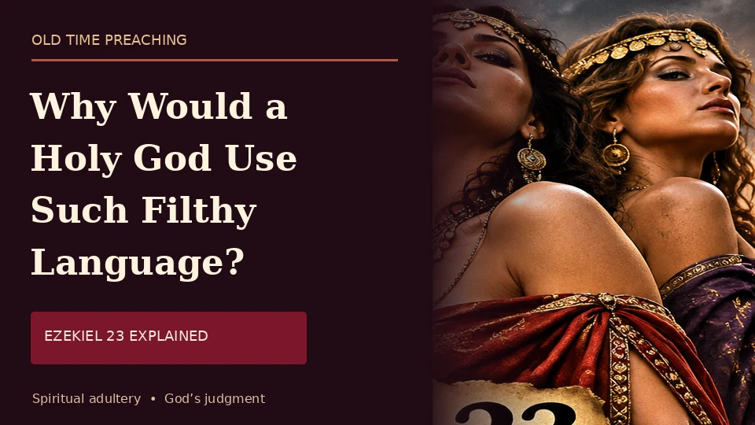

Articles
Biblical conviction and Christian living, with thoughtful articles that call for practical faith.

Buried in Ash: Were Christians Living in Pompeii Before AD 79?
Discover the biblical and archaeological evidence for Christians in Pompeii before Mount Vesuvius buried the city.
November 15, 2026

Why Would a Holy God Use Such Filthy Language? Ezekiel 23:20 Explained
Ezekiel 23:20 explained: shocking language, spiritual unfaithfulness, Hosea and Gomer, and the call to repentance.
November 10, 2026
I Survived the Titanic: A Christian Allegory
A sinking ship, the idols of humanity, and Commodore Christ’s extraordinary rescue of one repentant sinner.
How to Trust God in Hard Times
What losing my business, fatherhood and J. C. Ryle taught me about faith, humility and God's grace.
Lest We Forget: The Biblical Meaning Behind Remembrance Day
What does “Lest We Forget” mean? Explore the Bible verse, Rudyard Kipling’s poem, and the importance of remembering the cause.
Should Wealthy Christians Give More?
Spurgeon on cheerful giving, proportionate generosity, and 2 Corinthians 9:7.
Are Wealthy Christians Robbing God?
Spurgeon’s challenge, Christian stewardship, and the good works that can be overlooked.
Robbers of God — Original Sermon
Listen to the narration and read the sermon excerpt.